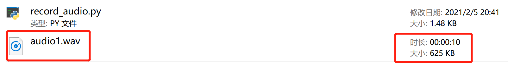
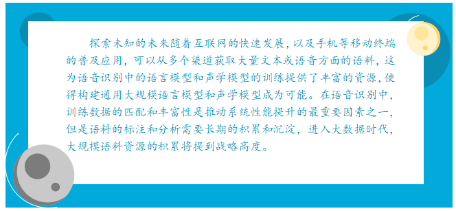

任务一 语音数据采集
【任务描述】
利用麦克风录音并保存到本地，文件格式为WAV。
【任务实施】
步骤1 安装pyaudion、wave依赖库。我们采用pip install命令方式，参考如下：
pip install PyAudio
pip install wave
步骤2 创建PyAudio对象，打开声卡，创建缓存空间，代码如下：
import pyaudio
import wave
CHUCK = 256 #设置底层缓存的块大小为256
FORMAT = pyaudio.paInt16 #设置采样深度为16位
CHANNELS = 2 #设置声道数为2
RATE = 16000 #设置采样率为16k
RECORD_SECONDS = 10 #设置 录音时长为10s
# 实例化一个PyAudio对象
p = pyaudio.PyAudio()
# 打开声卡
stream = p.open(format = FORMAT,
channels = CHANNELS,
rate = RATE,
input=True,
frames_per_buffer=CHUCK)
步骤3 录音10秒，并且将音频数据存储到列表:
# 创建列表用来存储采样的音频数据
record_buf = []
print("*****开始录音：请在10s内输入语音***")
for i in range(0,int(RATE/CHUNK*RECORD_SECONDS)):
data = stream.read(CHUNK) #读取声卡缓冲区的音频数据
record_buf.addpen(data) #将读取的音频数据追加到列表
print('***录音结束***')
步骤4 通过wave将音频数据写到wav文件中。
wf = wave.open('audio1.wav', 'wb') # 一读写模式创建一个音频文件，名字为“audio1.wav"
wf.setnchannels(CHANNELS) # 设置声道数为
wf.setsampwidth(p.get_sample_size(FORMAT)) # 设置采样深度
wf.setframerate(RATE) # 设置采样率
# 将数据写入创建的音频文件
wf.writeframes(b"".join(record_buf))
步骤5 录音结束，停止并关闭声卡。不管是从数据安全还是资源管理方面，这一步操作都是必须的。
wf.close() # 关闭文件
stream.stop_stream() # 停止声卡
stream.close() # 关闭声卡
pa.terminate() # 终止pyaudio
经过以上5个步骤，运行程序，当出现提示后开始录音，10秒后录音自动结束，程序文件所在目录下新增“audio1.wav”文件。播放audio1.wav，听听看是不是刚刚录制的声音吧。


本任务实战代码如下,位于/xm1/rw1.ipynb 同学们来运行一下吧
- 本实验需要使用到麦克风，请同学们编写完代码后本地运行
【任务拓展】
语音数据采集的过程涉及到数据采集方式、数据清洗、数据标注、数据管理和数据安全处理。
- 语音数据采集方式：将用户与机器对话的声音信息收集起来，一般分为近场和远场两个部分，近场采集一般基于手机就可完成，远场采集一般需要麦克风阵列。数据采集同时还有关注采集环境，针对不同数据用途，语音采集的要求也很不一样，比如人群的年龄分布、性别分布和地域分布等。
- 语音数据清洗：将采集的数据进行预处理，剔除不合要求的语音甚至是失效的语音，为后面的数据标注提供精确的数据。
- 语音数据标注：将声音的信息翻译成对应的文字，训练一个声学模型，通常要标注数万个小时，而语音是时序信号，所以需要的人力工时相对很多，同时由于人员疲惫等因素导致标注的错误率也比较高。如何提高数据标注的成功率也是语音识别的关键问题，有多少智能就有多少人工，数据标注工作者也是推动人工智能技术发展的贡献者。
- 数据管理：对标注数据的分类管理和整理，这样更利于数据的有效管理和重复利用。
- 数据安全：对声音数据进行安全方便的处理，比如加密等，以避免敏感信息泄露。我国已经出台了《数据安全管理办法》等一系列数据安全的法律。